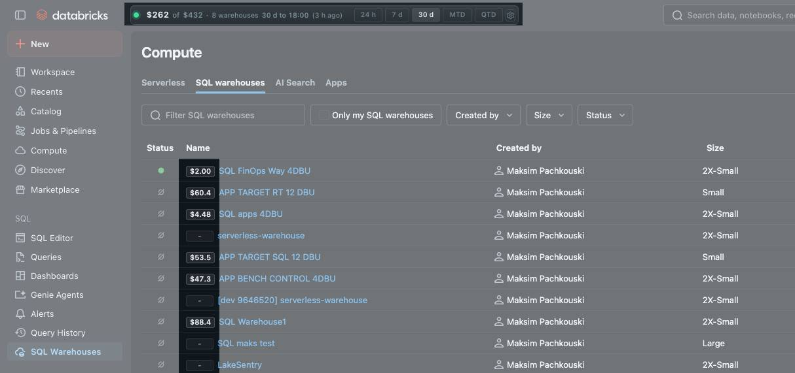
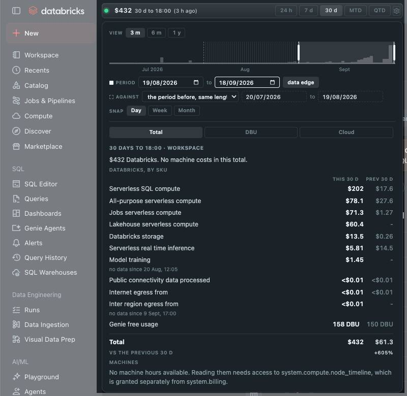

01 Clusters
Compute, with cost in view
Keep cost context close while you browse the clusters in your workspace.

FinOpsWay is a free FinOps browser extension for Databricks. Track Databricks costs directly in your workspace, alongside your jobs, clusters, and pipelines.

FinOpsWay is available in the Chrome Web Store and on Firefox Add-ons. It is free and does not need an account. Read the setup guide for creating and configuring a cluster.
 Available for
Google Chrome
Get the extension
Available for
Google Chrome
Get the extension
 Available for
Microsoft Edge
Get the extension
Available for
Microsoft Edge
Get the extension
 Available for
Mozilla Firefox
Get the extension
Available for
Mozilla Firefox
Get the extension
Edge users install from the Chrome Web Store. After installing, open the extension's options page, choose your workspace and paste a personal access token. Browser session mode is available for testing, but use it at your own risk: it is not recommended for production. Then open any Databricks page and the cost chip will appear in the top navigation. Questions? Email us.
FinOpsWay places cost context next to the Databricks resources you use every day.
The extension has no backend and no telemetry. The only network requests it makes are the queries themselves, sent to the Databricks workspace you are signed in to. We run no server, receive no data and cannot see what you query.
The data the extension reads is used only to display your Databricks spend. None of it is sold, shared with third parties or used for advertising. Cloud machine prices are bundled with the extension, so estimating cluster cost does not contact any cloud provider either. Read the full privacy policy.
*.cloud.databricks.com) and Azure
(*.azuredatabricks.net). The extension works the same
way on both.